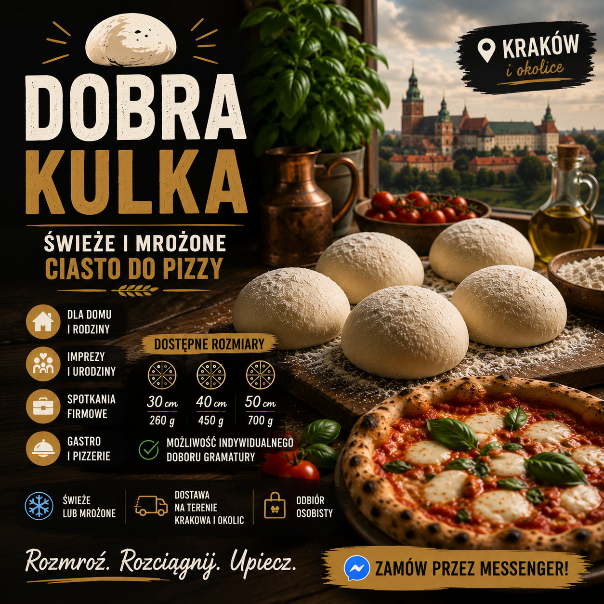
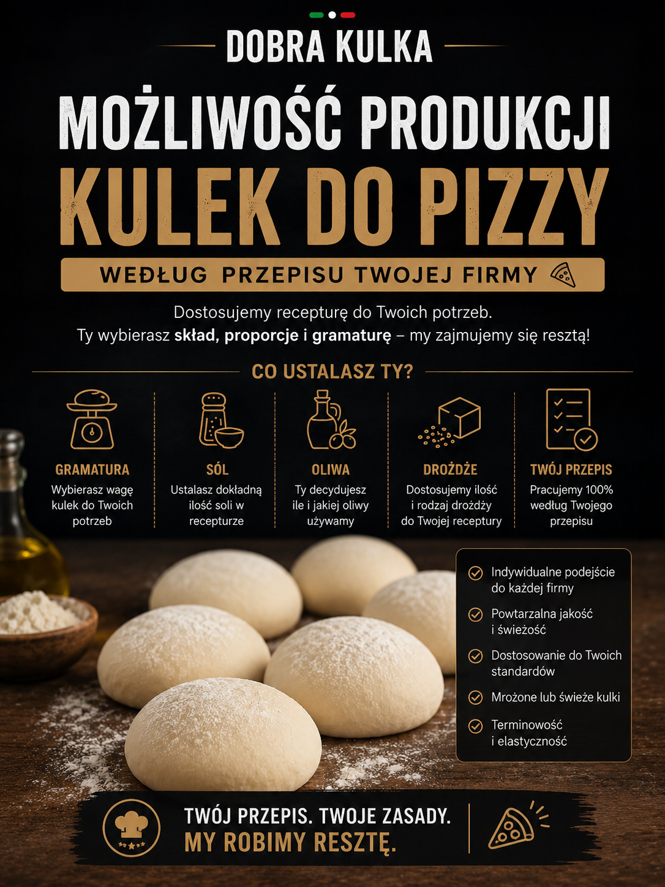
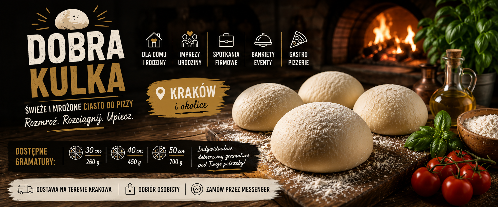

Nie tylko jedzenie — atrakcja, którą goście zapamiętają.
Pizza Live to zapach świeżego wypieku, włoski klimat i pokaz dla gości. Sprawdza się na weselach, poprawinach, urodzinach, eventach firmowych, piknikach i imprezach plenerowych.

Włoska strefa smaków
Idealne na wesela, poprawiny i eventy firmowe
Możemy przygotować strefę Pizza Live, bufet włoskich przekąsek albo mini warsztaty pizzy, gdzie goście sami tworzą pizzę z naszą pomocą.
- 💍 Wesela i poprawiny
- 🎉 Urodziny i jubileusze
- 🏢 Eventy firmowe i integracje
- 🎪 Pikniki oraz imprezy plenerowe
Świeże i mrożone
Ciasto do pizzy dla domu, imprez i firm
Gotowe kulki do pizzy w popularnych gramaturach. Rozmroź, rozciągnij i upiecz.
30 cm / 260 g
40 cm / 450 g
50 cm / 700 g
Inna gramatura na zamówienie


Dla gastronomii
Kulki do pizzy według receptury Twojej firmy
Możemy przygotować świeże lub mrożone kulki pod lokal gastronomiczny: gramatura, sól, oliwa, drożdże, hydracja i fermentacja do ustalenia.
Galeria
Zobacz klimat Dobrej Kulki

Zapytaj o termin lub współpracę
Kraków i okolice. Zadzwoń albo napisz na Facebooku.